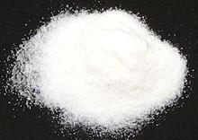

Konjac / Konnyaku
[Yam Cake; Devil's Tongue; Konnyaku (Japan); Gonyak (Korea);
Amorphophallus konjac]
While called "Yam Cake", this product is not made from a yam, but from
a large root corm of a tropical Arum plant, not related to yams even at
the Order level. It is much used in the cuisines of Japan and Korea. It
is made up into blocks as shown in the photo, but also into noodles,
called shirataki. A flour made from the dried corms is also an important
product.
The Konjac plant is native to tropical and warm temperate zones of
East Asia, as far north as Japan, and as far south as Indonesia. It has
been planted in Hawaii.
More on Arums
 The photo to the left is what this stuff is made from, the root corm of
an Arum related to the famous Corpse Flower. The Konnyaku jelly has no
color and very little flavor, being valued mainly for its texture. The
dark version, more common than the white, is colored with ground Hijiki
seaweed. The konjac jelly consists mostly of dietary fiber, so a 1 ounce
serving provides less than 1 calorie and 0 carbs. Ingredients:
Yam Flour, Water, Calcium Hydroxide, color from Seaweed Powder.
Photo by Silke Baron distributed under license
Creative Commons
Attribution v2.0 Generic.
The photo to the left is what this stuff is made from, the root corm of
an Arum related to the famous Corpse Flower. The Konnyaku jelly has no
color and very little flavor, being valued mainly for its texture. The
dark version, more common than the white, is colored with ground Hijiki
seaweed. The konjac jelly consists mostly of dietary fiber, so a 1 ounce
serving provides less than 1 calorie and 0 carbs. Ingredients:
Yam Flour, Water, Calcium Hydroxide, color from Seaweed Powder.
Photo by Silke Baron distributed under license
Creative Commons
Attribution v2.0 Generic.
Buying:
Konnyaku Blocks and Noodles can be found in
small plastic bags in the refrigerated cases of Japanese and Korean
markets. Here in Los Angeles, Japanese markets are nearing extinction
due to excessive assimilation. Korean markets abound, and carry a
better selection of Japanese ingredients than the remaining Japanese
markets. The block of Konnyaku in the photo above was purchased from a
Korean Market in Los Angeles (La Cañada Flintridge) for 2016 US
$1.49 for a 9 ounce block. The Korean markets also have various
Shirataki noodle forms.
Cooking:
Both Knnyaku blocks, cut up in various shapes,
and Shirataki noodles are used mainly in simmered dishes like Oden and
Sukiyaki. Unlike most other jellies, Konjac jelly becomes more firm
rather than melting when cooked, and can stand long simmering times.
In Japan, blocks are also sliced without cooking and served as sashimi,
usually with a miso dipping sauce.
Shirataki Noodles & Shapes
Konnyaku noodles are made in many shapes and sizes, both white and
colored with powdered seaweed. The photo specimen, about 3-3/4 inches
long, is sold as "Konnyaku Knots". I have also seen white rolls scored
to look like curls of scored squid, for use in vegetarian "seafood"
dishes. Unlike rice noodles, which look almost the same when cooked,
Shirataki noodles do not disintegrate. Rice noodles break into short
pieces with even moderate cooking. Ingredients: Yam Flour, Water,
Calcium Hydroxide.
Konjac Flour - Glucomannan

This product, the raw material from which Konnyaku and Shirataki
are made, is extracted from ground konjac corms, which are 40%
Glucomannan, a soluble fiber. The extracted flour is almost
entirely Glucomannan. This flour has a number of food industry
uses as a gelling agent, thickener, film former, emulsifier, and
stabilizer. Glucomannan will jell cold, a very useful characteristic,
but this can also be dangerous.
Glucomannan is important to vegans as a substitute for gelatin,
though its properties are rather different. It is similarly used by
diabetics as a thickener containing no carbs and almost no calories.
It is being tested and used as a weight control potion, but must be
used with care, as there are dangers from clogging and choking. Weight
control uses are not currently FDA approved.
Certain Japanese candies made with konjac flour are banned from the
United States and Europe, because people unfamiliar with the
characteristics of these candies, particularly children and elderly,
have died from choking.
am_konjaz 160611 - www.clovegarden.com
©Andrew Grygus - agryg@aaxnet.com - Linking to and
non-commercial use of this page is permitted.